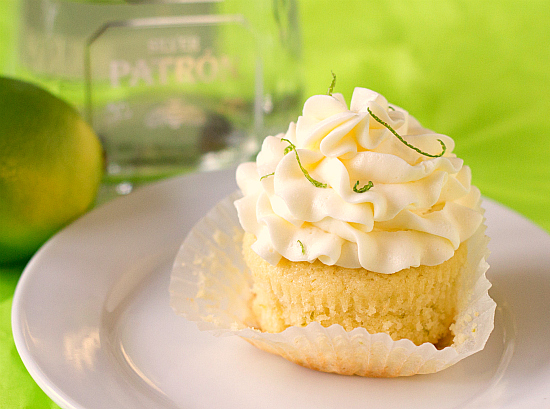

Margarita Cupcakes

Ingredients
- 1 pkg Yellow Cake Mix
- 1 t Vanilla Extract
- 2 T Lime Flavored Tequila
- 1 T Lime Juice
- 2 t Lime Zest
- *Plus cake mix ingredients
Directions
- Heat oven to 350°F.
- Prepare cake mix according to directions. Stir in the rest of the ingredients.
- Bake in paper cupcake cups for approximately 15 minutes.
Yield: approximately 16 cupcakes
For more fun cupcakes try baking Moscato Cupcakes